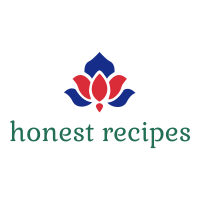

Overview
Purpose
Have you ever spent 20 minutes scrolling through a seemingly never-ending article before finally getting to the actual recipe you're trying to make? If so, check out my new website, perfect for people like me who love cooking and baking. My website will have tried and tested delicious recipes, easily accessible with one click. Each recipe will be featured at the top of its page, with an option for commentary below the recipe. No more scrolling through endless anecdotes before dinner. If you're hungry and want to get cooking, quick, this is the website for you!
Audience
My website will be perfect for people like me who love cooking and baking. People that are looking for an easy to find and simple to follow recipe will love the convenience and intuitiveness of my site. My website will attract home bakers and cooks that are technology users and prefer to follow recipes from a device with no hassle. They are looking for convenience. My website users will not want to waste their time trying to find that one recipe they used that one time three months ago. They won’t want to waste their time scrolling through a story about the week leading up to the author making the recipe. WIth my site, the recipes will be easily and quickly accessible.
Content
My site will have a variety of recipes including breakfast, lunch, dinner, and dessert recipes. Each recipe will be featured at the top of its page, making it easy to find. Visitors to my site will be able to browse through recipes to find something tasty to create. Recipes will be easy to follow and will be located at the top of their respective page for convenience’s sake. Visitors can also request recipes be added to the site using the convenient Recipe Suggestions page. They can send a link to a website or upload instructions of their own. This will make this site even more appealing to users as all their favorite recipes end up on one site.
Why Choose My Site?
People will want to come to my site because it saves them time and is less aggravating than other sites to use. My website will have tried and tested delicious recipes, easily accessible with one click. Each recipe will be featured at the top of its page, with an option for commentary below the recipe. No more scrolling through endless anecdotes before dinner. If you're hungry and want to get cooking, quick, this is the website for you!
Branding
Website Logo
Style Guide
Color Palette
Palette URL:https://coolors.co/da2c38-226f54-87c38f-f4f0bb-43291f
| Primary | Secondary | Accent 1 | Accent 2 | Accent 3 |
|---|---|---|---|---|
| [#F4F0BB] | [#226F54] | [#DA2C38] | [#FFFFFF] | [#0B0B7C] |
Typography
Heading Font: Lora
Lora is simple, but will still help the important sections stand out. This will help guide users to the correct section of the site.
Paragraph Font: Merriweather
Merriweather is classic, easy to read, and looks neat, even in longer text lengths. Users are comfortable with this font and it goes well with Lora.
Normal paragraph example
An excellent place to find a new breakfast, lunch, or dinner recipe. Click on a recipe to easily view the needed ingredients and instructions. Recipes have been tried and tested. Don't see what you're looking for? Try suggesting a recipe to be added to the site using our Suggest a Recipe Page.
Colored paragraph example
Everyone loves a good home-cooked meal. With this website, these meals will be easy to come by. Start exploring now for a delicious dinner.